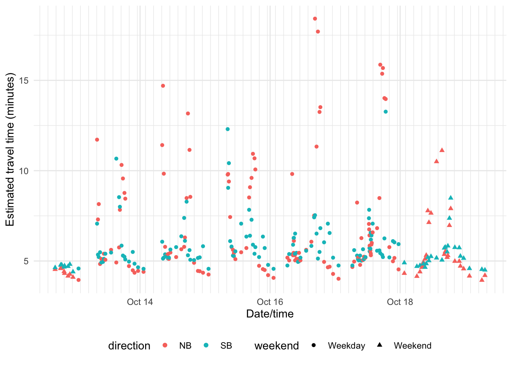
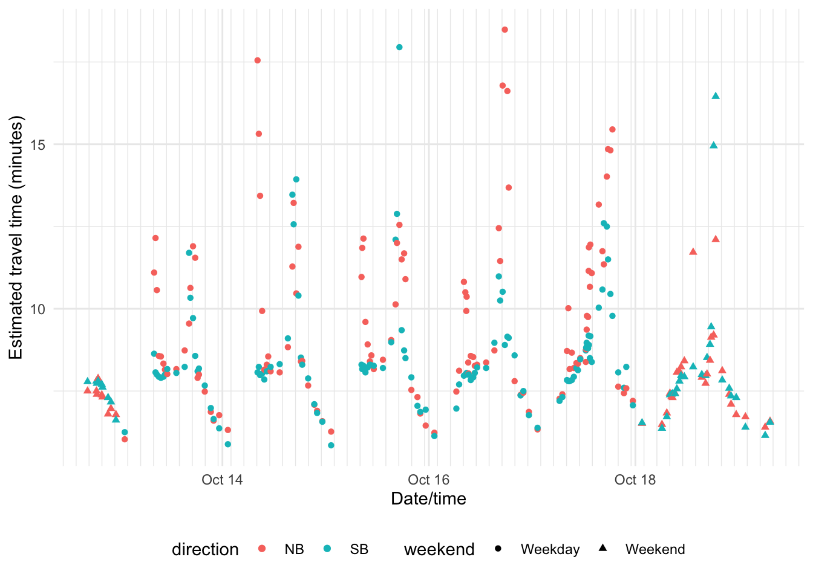
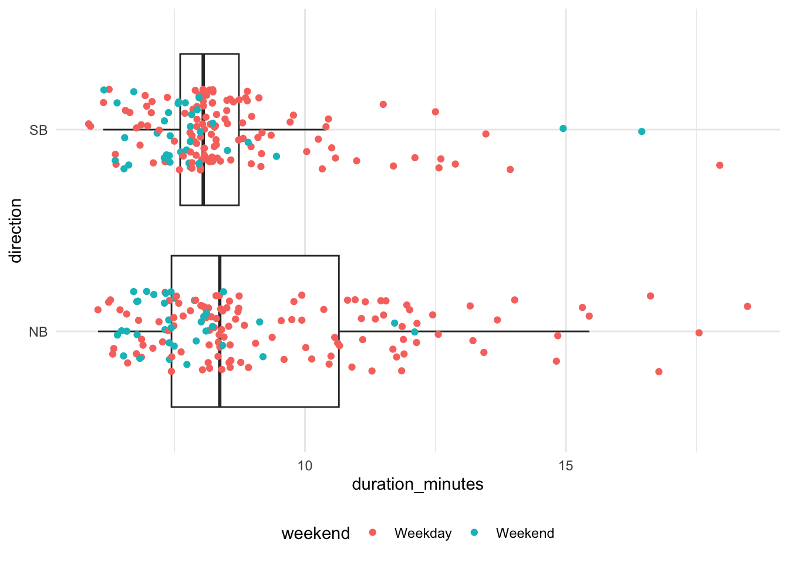

Travel time estimates
John Nolen Corridor
These travel time estimates are for the John Nolen Drive (JND) corridor between Rimrock and the “Hairball” (JND/Wilson/Willy/Blair).
Travel time estimates
Travel time estimates in a sortable and filterable table:
Summary statistics
| Estimated travel times (minutes) | |||||
| Direction | Mean | Median | Minimum | Maximum | 90% of trips |
|---|---|---|---|---|---|
| NB | 6.7 | 5.4 | 3.9 | 18.4 | 4.2-13.7 |
| SB | 5.8 | 5.4 | 4.4 | 13.3 | 4.6-8.1 |
Travel time plots

This plot shows the median travel time (middle line), the 25th and 75th percentile (interquartile range; box), 1.5 times the interquartile range (whiskers).

Park Street Corridor
These travel time estimates are for the Park Street corridor between Badger Road and University Ave.
Travel time estimates
Travel time estimates in a sortable and filterable table:
Summary statistics
| Estimated travel times (minutes) | |||||
| Direction | Mean | Median | Minimum | Maximum | 90% of trips |
|---|---|---|---|---|---|
| NB | 9.2 | 8.4 | 6.0 | 18.5 | 6.5-14.3 |
| SB | 8.5 | 8.1 | 5.8 | 17.9 | 6.4-12.5 |
Travel time plots

This plot shows the median travel time (middle line), the 25th and 75th percentile (interquartile range; box), 1.5 times the interquartile range (whiskers).
